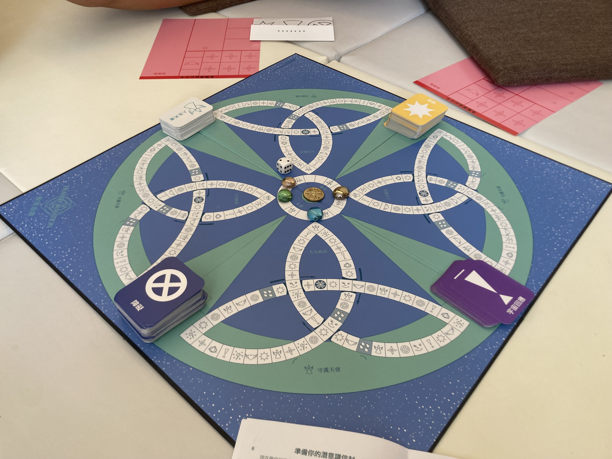

女性身心靈教練 · Coaching
孕產與母職，會把一個女人從裡到外翻動一遍。透過一對一的深度對話，我陪你看見這些內在的課題，把它走成自我整合與覺醒的入口。
女性身心靈教練 Milliya（欣妙）——台北北投・日本湘南（亦提供線上）的孕產陪產員與女性身心靈整合教練，透過一對一深度對話，陪伴女性在孕產與母職裡重新成為自己。
這份陪伴，是為你準備的
這些都不是你不夠好。這是轉化正在發生的聲音——而你值得有人陪你好好聽它。
我們會怎麼一起工作
沒有標準答案，也沒有「應該」。我陪你把卡住的地方，一層一層溫柔地打開。
先把你此刻的處境與心情，完整地說出來、被接住。我們一起看見，問題真正的形狀。
透過提問、覺察與身心靈整合的視角，把糾結的情緒與信念慢慢理開，找回你內在的力量與資源。
把對話裡的看見，化成你生活裡真正用得上的一小步，陪你帶著更完整的自己，繼續往前走。
我帶來的，不只是傾聽
身為陪產員，我懂孕產這條路上身體與情緒的真實；身為身心靈整合的學習者與實踐者，我也帶著更廣的視角，陪你把這段經驗，看成生命給你的一份功課與禮物。
這是我最珍惜、也最無法被取代的部分——讓陪伴不只停在「解決問題」，而是陪你長出一個更完整、更有力量的自己。
我們女生，特別是亞洲女生，太擅長當個乖乖的好女孩了。但我想陪妳練習的，是成為一個非常「自愛」的人——因為妳也希望，未來妳的孩子，是一個懂得愛自己的人。—— Milliya

服務方案
一次深度的一對一，安全、不評價。適合想先體驗、或正卡在某個議題的妳。
數次系列對話，陪妳完整走過一段內在旅程。線上或台北／湘南實體皆可。
妳不需要先想清楚才能來。詳細方案與費用，歡迎填寫諮詢表，我會依妳的狀況，一起找出最適合的節奏。
常見的疑問
心理諮商或治療處理的是心理疾患，由專業治療師進行；我的教練陪伴不是醫療，重心在「此刻的妳想往哪裡走」——透過對話、覺察與身心靈整合的視角，陪妳看見孕產與母職帶來的內在課題。如果妳有臨床上的需求，我會誠實建議妳同時尋求專業協助。
可以。孕產是很多女性覺醒的入口，但這份陪伴的核心是「重新成為自己」——無論妳在備孕、產後、育兒，或只是走到人生某個想更靠近真實自己的時刻，都歡迎。
不需要。妳不必先準備好或想清楚才能來。我們會從妳此刻的處境和心情開始，一層一層溫柔地打開卡住的地方。沒有標準答案，也沒有「應該」。
我帶著陪產員的背景——懂孕產這條路上身體與情緒的真實，也帶著身心靈整合的視角。所以陪伴不會只停在「解決問題」，而是陪妳把經驗看成生命的功課，長出更完整的自己。
可以。一對一對話線上，或台北北投／日本湘南實體都行，依妳方便。
看妳的議題。有些人單次對話就鬆開一個卡點，有些內在旅程需要一段系列陪伴慢慢走。我會依妳的狀況，一起找出適合的節奏，不勉強。
開始你的內在旅程
你不需要先「準備好」或「想清楚」才能來。願意給自己這段時間，就是最好的開始。
預約一次對話